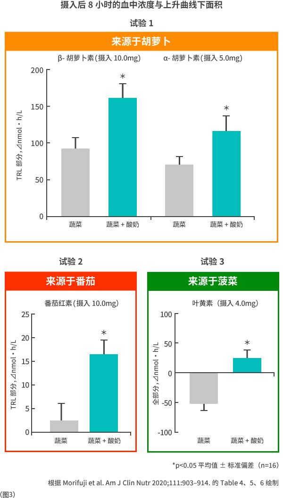

|
乳酸菌OLL1251株及乳酸菌OLS3290株的试验结果试验方法本次研究旨在明确酸奶对健康人群膳食来源类胡萝卜素吸收性的影响，进行了随机交叉试验。通过三个临床试验(试验1：胡萝卜，试验2：番茄，试验3：菠菜)，将参与者分为A组和B组。A组在第一次只摄取蔬菜，第二次摄取蔬菜和酸奶；B组则相反，第一次摄取蔬菜和酸奶，第二次只摄取蔬菜。随后比较了两组血液中的类胡萝卜素浓度。(图1)
试验食品由蔬菜和酸奶组成。(图2)蔬菜包括胡萝卜、番茄和菠菜。试验中使用的酸奶添加了含有大量EPS的乳酸菌OLL1251株和乳酸菌OLS3290株。此外，每次摄取试验日之间设有2周的洗脱期。
试验结果
试验1：胡萝卜
试验2：番茄
试验3：菠菜  乳酸菌OLL1251株及乳酸菌OLS3290株的作用有望解决社会问题酸奶对类胡萝卜素的吸收促进作用在类胡萝卜素内涵的健康功能发挥方面起着重要作用。这一功能有望帮助解决人们因营养不足或吸收不足等引起的健康问题。例如，这可能有助于通过脂质控制饮食进行治疗的患者应对维生素缺乏和不足问题，或可帮助正在进行训练且需要控制脂质摄入的运动员应对氧化应激。
通过乳酸菌的作用提高营养素吸收率，有助于充分吸收营养，能够帮助解决由于多种原因导致无法正常饮食者的营养摄入不足、以及原本吸收率偏低的营养素的吸收不足等问题。明治公司今后将继续通过乳酸菌研究为人类维护与促进健康做出贡献，并帮助解决社会问题。 |